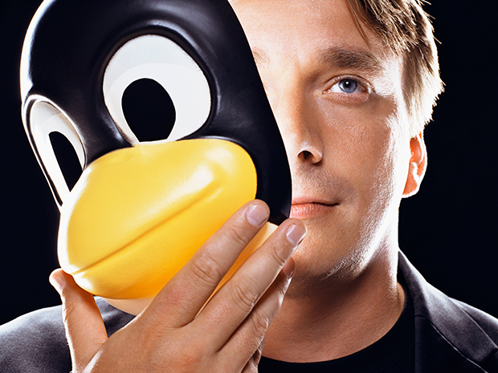

Linus Tovalds
Dec 28 1955
A Finnish Software Engineer who created and designed Linix kernal

1 The son of journalists Anna and Nils Torvalds,[7] the grandson of statistician Leo Törnqvist and of poet Ole Torvalds,
and the great-grandson of journalist and soldier Toivo Karanko. His parents were campus radicals at the University of
Helsinki in the 1960s. His family belongs to the Swedish-speaking minority in Finland. He was named after Linus Pauling,
the Nobel Prize–winning American chemist, although in the book Rebel Code: Linux and the Open Source Revolution, he is
quoted as saying, "I think I was named equally for Linus the Peanuts cartoon character", noting that this made him "half
Nobel Prize–winning chemist and half blanket-carrying cartoon character".[8]
2 His interest in computers began with a VIC-20[9] at the age of 11 in 1981. He started programming for it in BASIC, then
later by directly accessing the 6502 CPU in machine code (he did not utilize assembly language).[10] He then purchased a
Sinclair QL, which he modified extensively, especially its operating system. "Because it was so hard to get software for
it in Finland", he wrote his own assembler and editor "(in addition to Pac-Man graphics libraries)"[11] for the QL, and
a few games.[12][13] He wrote a Pac-Man clone, Cool Man.
3 Torvalds attended the University of Helsinki from 1988 to 1996,[14] graduating with a master's degree in computer
science from the NODES research group.[15] His textbooks while there included Programming the 80386[16] by John H.
Crawford and Patrick P. Gelsinger (SYBEX, 1987, ISBN 0895883813), and The Design of the UNIX Operating System[17] by
Maurice J. Bach (Prentice-Hall, 1986, ISBN 0-13-201799-7).[18]
4 He bought computer science professor Andrew Tanenbaum's book Operating Systems: Design and Implementation, in which
Tanenbaum describes MINIX, an educational stripped-down version of Unix. In 1990, Torvalds resumed his university
studies, and was exposed to Unix for the first time in the form of a DEC MicroVAX running ULTRIX.[19] His MSc thesis was
titled Linux: A Portable Operating System.[20]
5 On 5 January 1991[21] he purchased an Intel 80386-based IBM PC clone[22] before receiving his MINIX copy, which in turn
enabled him to begin work on Linux.
6 His academic career was interrupted after his first year of study when he joined the Finnish Navy Nyland Brigade in the
summer of 1989, selecting the 11-month officer training program to fulfill the mandatory military service of Finland. He
gained the rank of second lieutenant, with the role of an artillery observer.[23]

List of his contributions
-
He's success of the widely-used Linux operating system
-
The GNU project
-
The Oracle